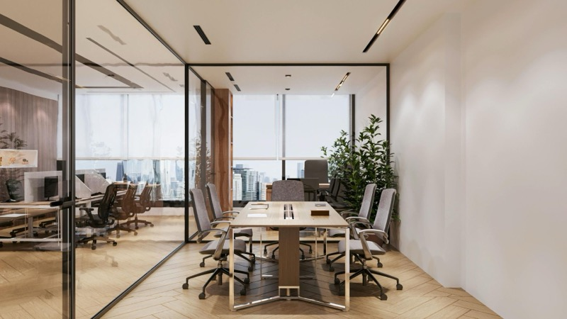

大手ネットニュース掲載企業 × 第三者記者取材
注目企業の評判を、
第三者が正直に届ける。
楽天・ニコニコ・エキサイトなど大手ネットニュースで話題の企業のみを取材対象に厳選。フリーランス記者・漆沢祐樹が利用者への直接インタビューと運営会社への直撃取材を通じて、都合の良いことも悪いことも正直に書きます。
0件+
取材・検証済み口コミ
0年+
フリーランス記者歴
0件+
累計執筆記事数
取材対象の選定基準：以下の大手メディアに掲載された企業のみ
- 楽天ニュース
- ニコニコニュース
- エキサイトニュース
- Yahoo!ニュース
- goo ニュース
- livedoor ニュース
注目の評判記事
取材のしくみ
公正な第三者評判レポートが届くまでの3ステップ
選定
楽天・ニコニコ・エキサイト等の大手ネットニュースに掲載された企業のみを取材対象とします。社会的注目度の高い企業を厳選することで、情報の価値と信頼性を担保します。

取材
実際のサービス利用者への直接インタビューと、運営会社への直撃取材を実施。記者自身も体験・検証します。良い点も悪い点も、隠さず記録します。
公開
PR記事であることを冒頭に明示した上で、記者名・取材日とともに掲載。ネガティブな情報の削除要求には応じません。透明性を最優先した発信です。
カテゴリから探す
このメディアについて
みんなの評判.comが取材対象とするのは、楽天・ニコニコ・エキサイトなど大手ネットニュースで紹介された最近の注目企業のみです。すでに社会的に注目されている企業だからこそ、第三者が取材することで「信用の裏付け」が生まれます。
３０代で複数の上場会社役員を経験し、メディアコンサルやキャリア教育事業など２社の代表取締役を務める漆沢が、PR記事であることを明示した上で、利用者への直接インタビュー・運営会社への直撃取材・記者自身の率直な見解をすべて掲載します。掲載基準の高さが、このメディアの信頼性の根拠です。
みんなの評判.com の5つの約束
- 大手ネットニュース掲載企業のみを取材対象とする
- PR記事であることを記事冒頭に必ず明記する
- 利用者への直接インタビューを必ず実施する
- ネガティブな情報も掲載する（削除要求には応じない）
- 記者名・取材日を全記事に記載する
取材・掲載のご依頼
自社サービスの評判記事を、第三者記者の視点で執筆・掲載することをご希望の企業様は、以下よりお問い合わせください。
- 第三者目線での公正な取材・執筆となります
- ネガティブな内容の削除要求にはお応えできません
- 掲載後の記事内容を特定の方向で保証するものではありません